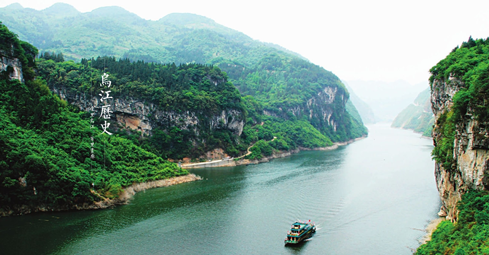

Wujiang river originated in guizhou weining map, has entered the unitary Yang county of chongqing wan river county in guizhou, wood township, Gong Tan town, peng autonomous county to the chongqing fuling into the Yangtze river, 1037 km of main stream of wujiang river, unitary Yang Gong Tan peng autonomous county town to about 100 kilometers along the river in guizhou, with "thousands of wujiang river, thyme gallery" of reputation
Wujiang river thyme gallery "mountain appeared, water like a jasper, QiuZhi hovering, waterfowl having xiang", "odd mountain, strange stone, green water, dangerous shoals, ancient town, covered Bridges, towpaths, suspended burial" constitutes the wujiang river landscape elements of the gallery. In particular, the lychee gorge, the white hyacinth gorge, and the tutu isthmus are the fine works of the wujiang gallery, and the qing dynasty poet wu rumei is admiring: the mountains and mountains in the shu are the first to be promoted.
Wujiang baili art gallery is a citywide scenic spot, which can be visited by the wujiang painting boat. Its surrounding the folk custom of primitive simplicity, there is constant - along with beautiful river in one thousand, the first ancient town has a history of chongqing culture Gong Tan, have original deep dragon valley, the birthplace of folk song has a merchant saddle miao, a national nature reserve - mayang river, have a healthy summer resort - the mountains around, etc., forming a rich tourism resources of the cluster.
Wujiang baili gallery has a long history and a rich culture. The ancient town of gong tan has a history of more than 1,700 years. In ancient times, the cave was built in the warring states period. The saddle city is the site of the southern song dynasty. Differential person suspension was buried is south of the eastern han dynasty minority differential of customs, people towpaths long history, great tide ", "bamboo zero poetry recess" accumulate cultural relics such as heavy, considerable research value. It is the west gate scenic spot of the tujia folk dancing village.，It was the cradle of the silankarp. Ancient tujia back marry crying marriage, the unique corn lamp, Yang play, horse lantern, young men and women express love folk "konoha love song", many folk handicrafts, has formed a unique local folk customs.
Japan in risk show valley gullies, uncanny workmanship of the escarpment, unruly of wujiang river, joy running apeng river that dot the beautiful wujiang river in gallery, received numerous expedition, adventure, photography enthusiasts, film and TV plays. Wujiang baili gallery is a stone that is still to be carved, and in the near future, it will become a bright pearl.。
In 2011, the guangdong people's favorite travel destination (lines) evaluation activities in the wujiang gallery was rated as "the most poetic" award, and subordinates with river scenic area, has won the "national cultural tourism emerging top ten brand", "the beauty of China's top ten towns gold line", chongqing "ba-yu new 12 scenery", "chongqing tourism development contribution award, top ten scenic spot", "China tourism brand overall list, brand is the most attractive scenic spot of the year" and "cool resort", become the chongqing eco-tourism to be bestowed favor on newly.
